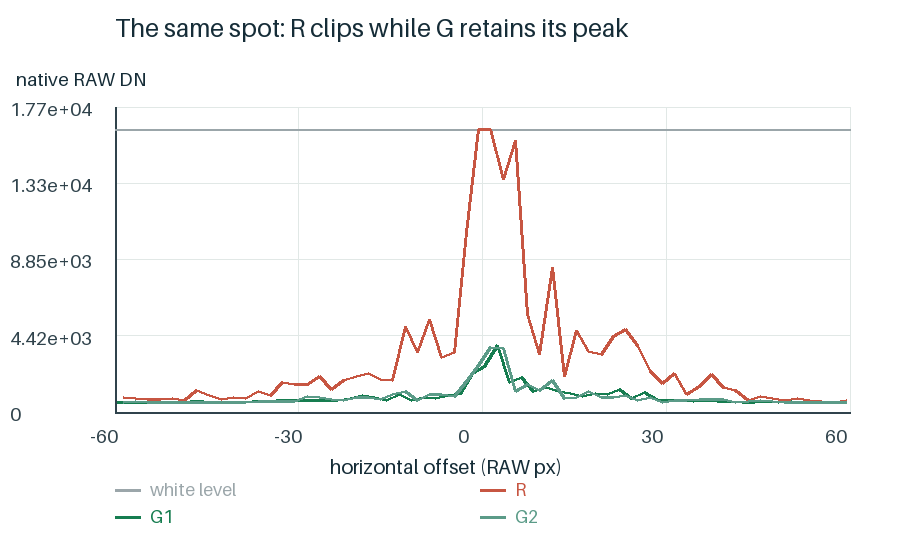
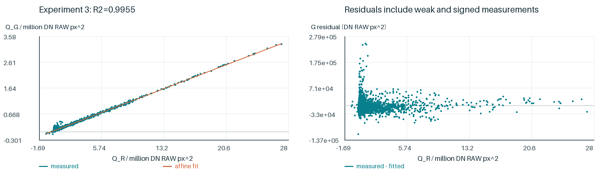
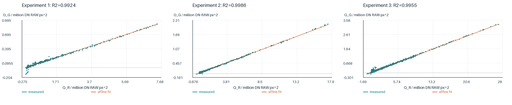
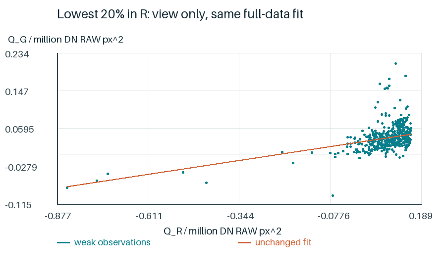
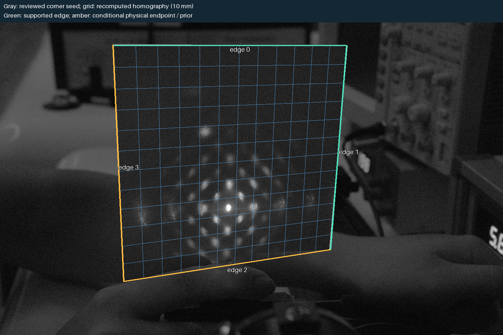
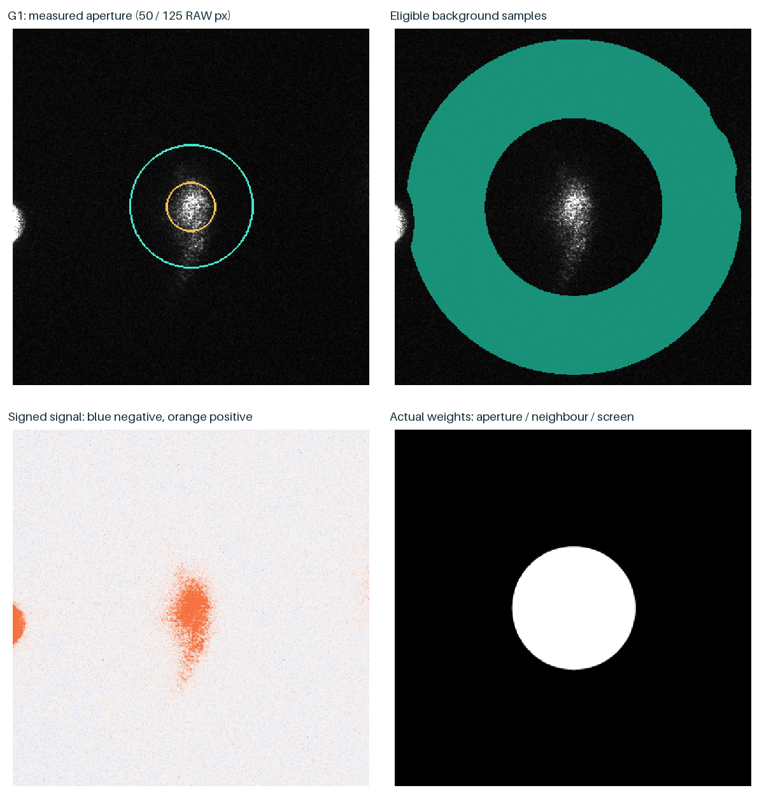
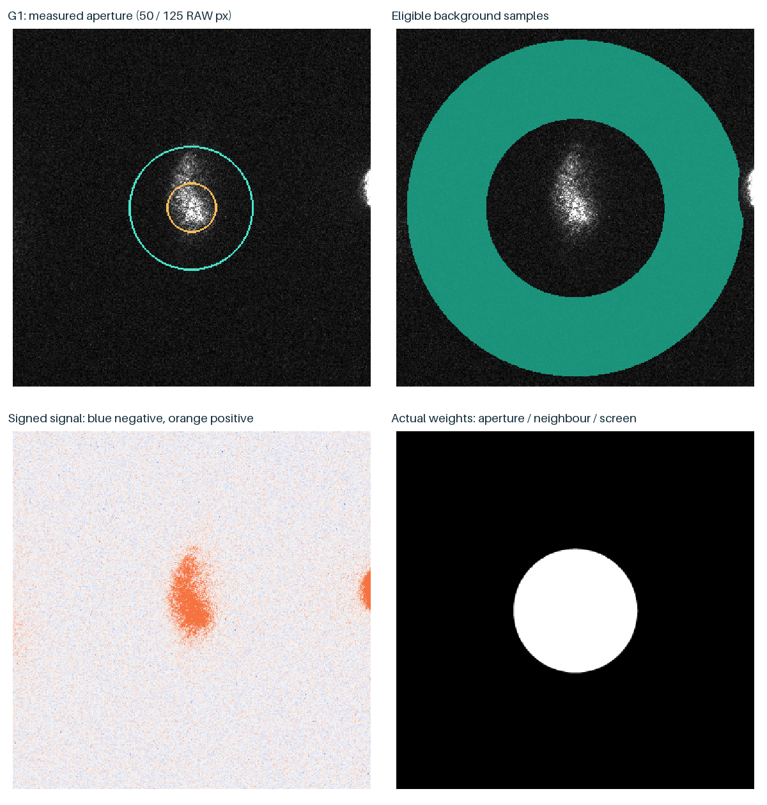
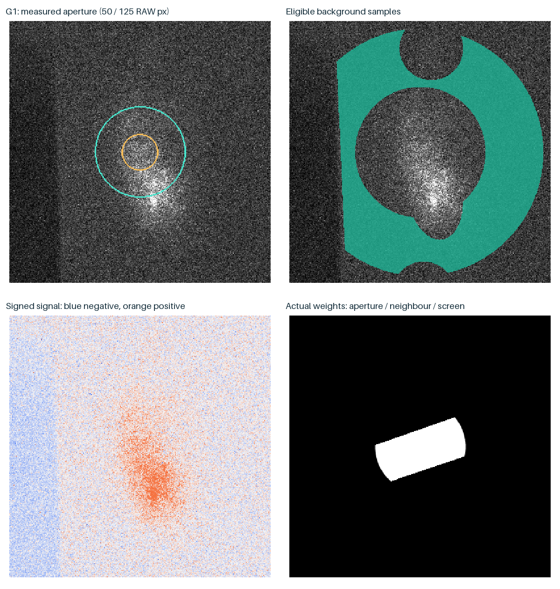
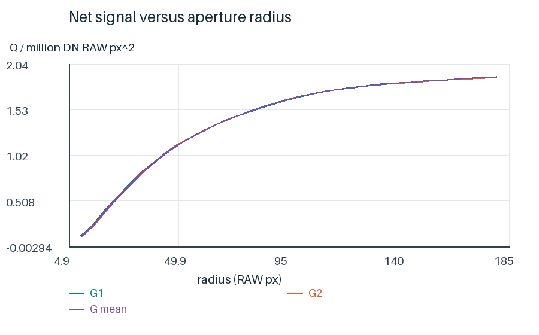

照片中的位置和亮度怎样用于测量？
红色激光的强光斑会使R通道削顶。我们先检验未饱和光斑的RG关系，再采用绿色净积分比较相对光强。


| 实验 | 光斑数 | 斜率 | R² |
|---|---|---|---|
| 实验1 | 455 | 0.121099 | 0.99236 |
| 实验2 | 684 | 0.120812 | 0.998631 |
| 实验3 | 2138 | 0.120551 | 0.995465 |
三轮结果支持采用G作相对测光；它不是绝对功率标定。拟合样本中，G原生采样最高读数为3509 DN，削顶示例达到7317 DN，亮区使用仍包含响应外推。


80组实际重算包含两孔径、过原点/带截距/二次模型、G1/G2核对、整帧留出和2000次按帧重采样。实验1保留旧反光审查身份。
拟合与留出结果 · 选样统计 · 逐点残差用光屏四边建立毫米坐标。随后先识别可靠光斑，再根据排列预测待查位置，回到原生采样检查是否有真实信号。

本例得到40个强候选、15个独立弱候选和1个几何补检。另一个3.48 V案例虽能拟合峰列，但预测检查未通过，因此关闭补检。
位置测量与光强测量分开进行。积分回到未插值的RAW采样：分别扣黑、估计背景、处理邻峰分区，再平均G1、G2的净积分。

| 光斑 | G1净积分 | G2净积分 | 平均G净积分 |
|---|---|---|---|
| 125_audit_p007 | 3.09297e+06 | 3.16792e+06 | 3.13044e+06 |
| 125_audit_p013 | 1.78867e+06 | 1.78475e+06 | 1.78671e+06 |
积分单位为DN·RAW px²；两路绿色分别积分后取平均。



得到的测量量：屏面位置和绿色净积分。接下来先看这些图样怎样随电压变化。
双击Mac或Windows启动器，在研究界面选择本节的案例，再点击分步计算或计算整个案例。
命令行参数：
--cli research --chapter measurement --out work/measurement_01
每次写入新目录。下方数据记录说明了本节实际重算范围。